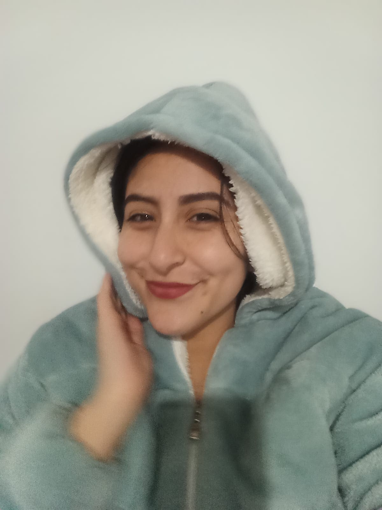
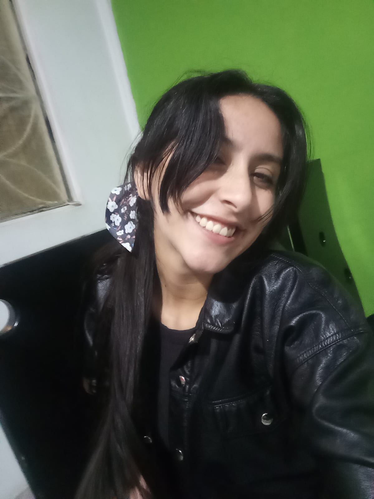
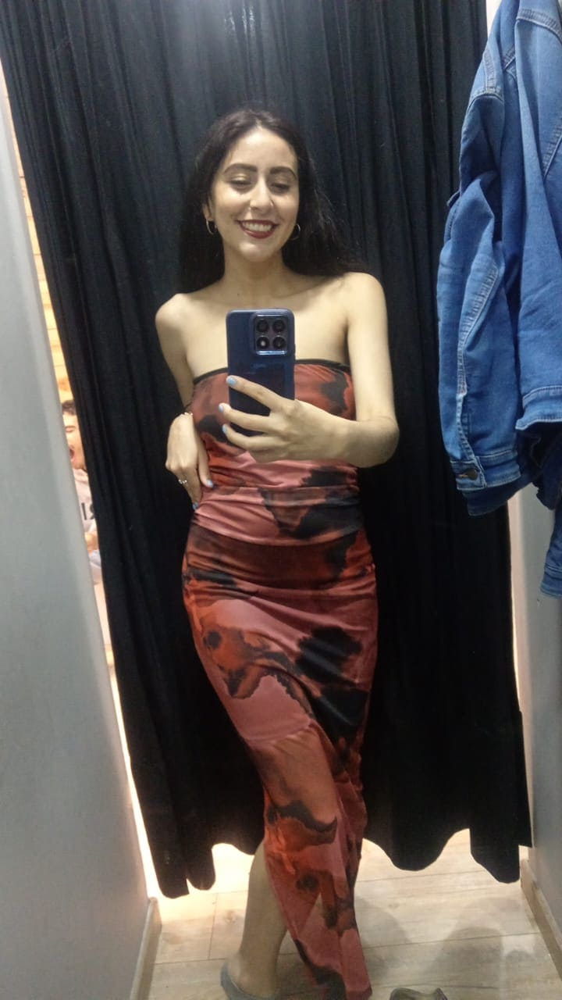
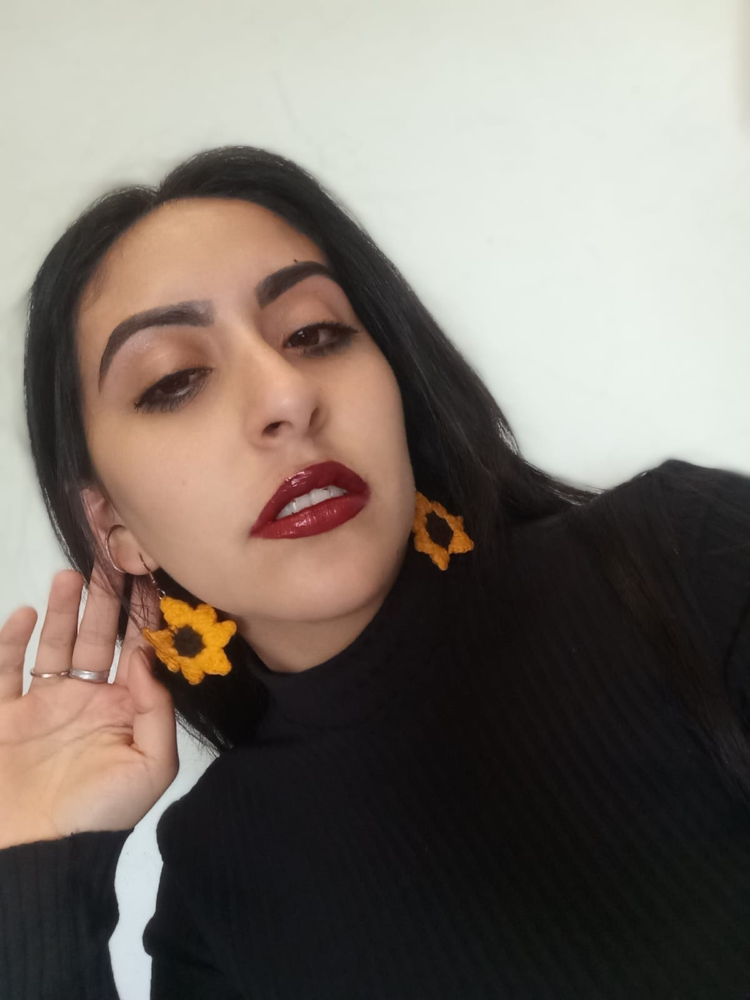
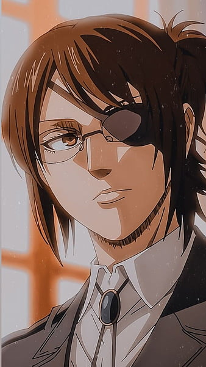
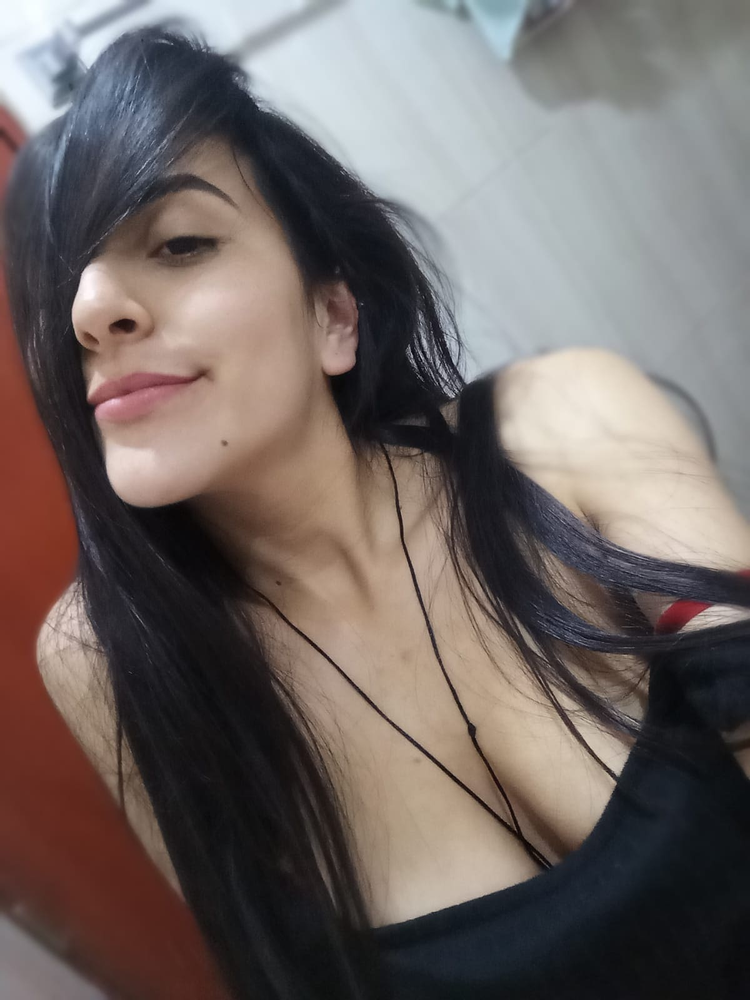
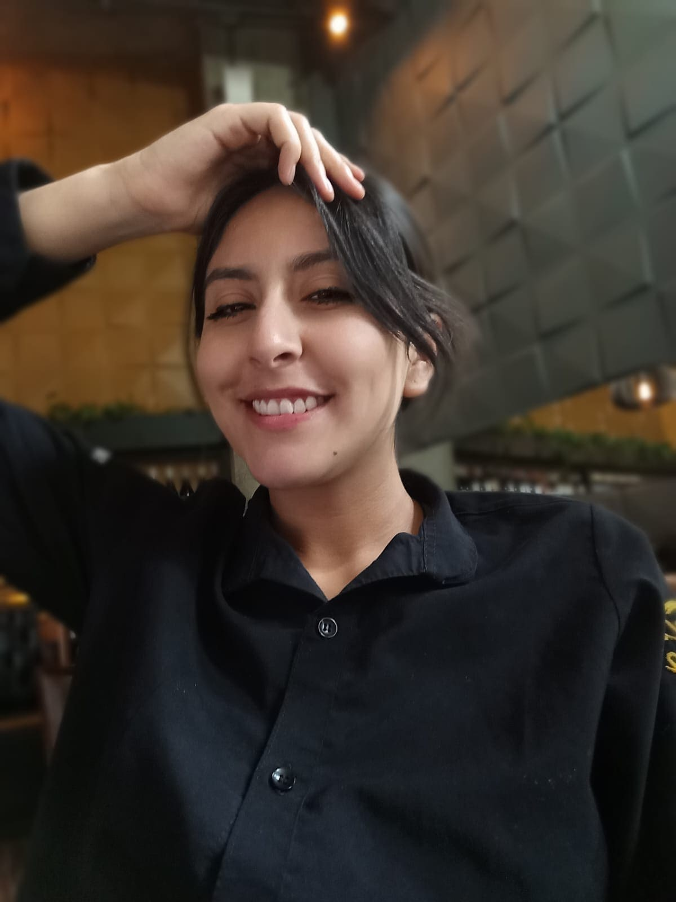
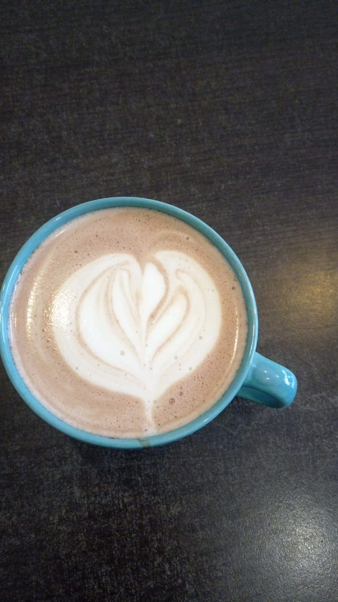
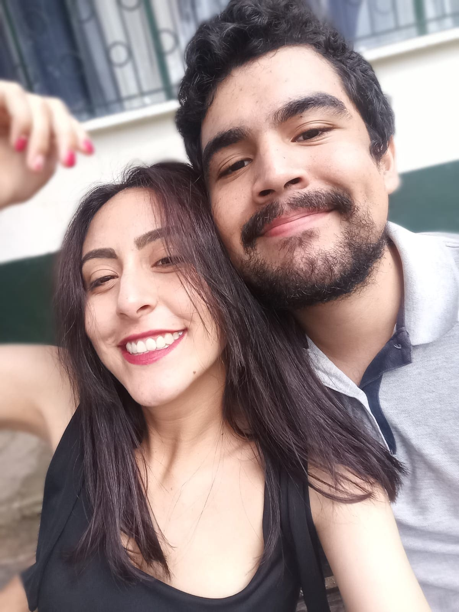
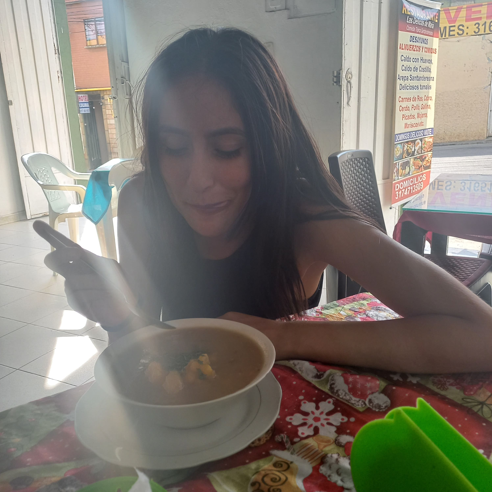

esta página contiene: cafecito, kdramas, pollo, caos emocional y demasiadas fotos tuyas siendo arte.
mucho sol, mucho calor y probablemente café frío.
identificar cafés como científica profesional.
pollo. demasiado pollo.
kdramas, música, y hacerme extrañarte.
“carajo.”
“coño.”
“coño la madre.”
“aja.”
“a la madre.”
cada una tenía mínimo 17 significados distintos.
pequeña, intensa y peligrosa si no ha dormido.
requiere paciencia, detalle y claramente yo nunca aprendí suficiente.
parece tranquila... pero pega fuerte después.
esto parece algo que usaría Hange Zoe en un laboratorio.










sé que ahora mismo hay kilómetros entre nosotros. tú por allá, seguramente trabajando, el cafecito o comiendo un rico pollito, con calorcito, viendo algo random y diciendo “coño” o "a la madre" por cualquier cosa. y yo acá con frío uy no jajaj, haciendo una página porque claramente las personas normales no hacen estas cosas. pero entre toda la distancia, las cosas raras, el tiempo y el silencio... hay algo que sigue siendo siempre bonito: haberte conocido. no hice esto para presionarte. ni para pedirte respuestas. solo quería dejar algo tan bonito y cálido en algún rincón del internet. algo que tuviera: sol, cafecito, pollito, caos, Hange tremenda personaje, y un poquito de ti. porque honestamente... eso merecía existir en algún lugar. aunque aja... sí extraño bastante todo contigo, las risas y las loqueras, aquellos momentos random que solo nosotros entendiamos como también nuestros enfados, todo. y siendo totalmente honesto... si algún día estos quieres hablarme denuevo.
aja... dale click ahí jeje ☕
Yo siempre contesto.bueno... igual el cafecito pendiente sí me lo debes.